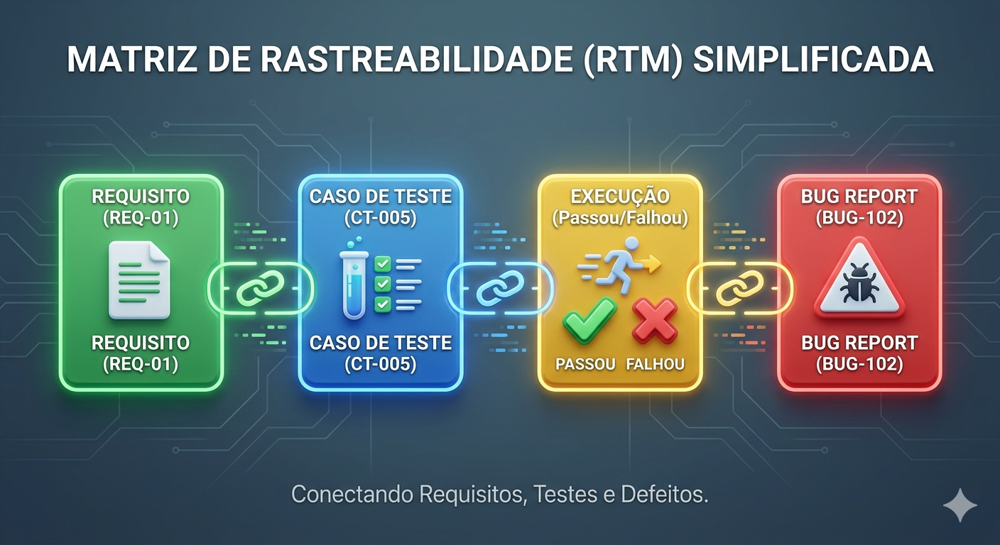
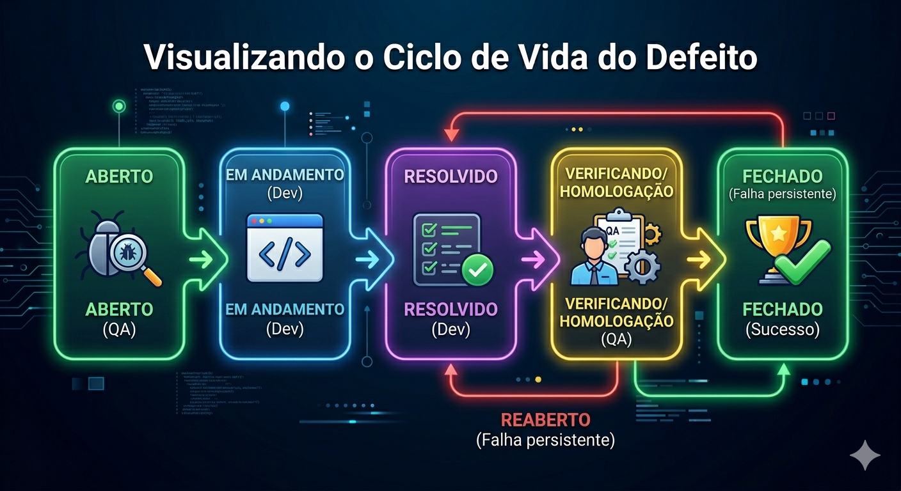
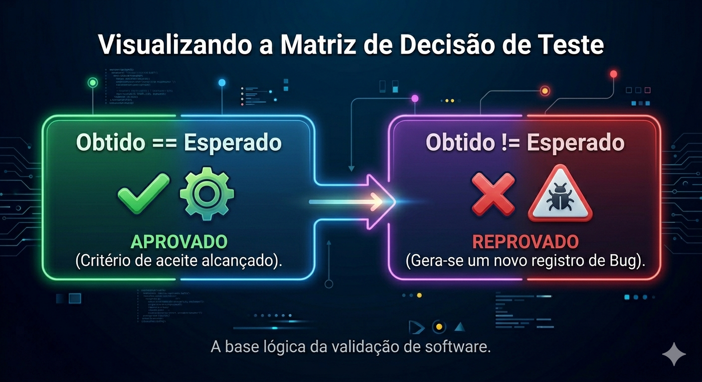

Descrição: Execução prática das rotinas de teste planejadas, emprego de ferramentas para registro e validação dos resultados obtidos.
Entender a execução de testes é como entender a diferença entre ler uma receita de bolo e realmente ir para a cozinha. Na teoria, tudo funciona; na prática, é onde descobrimos se o forno esquenta demais ou se faltou açúcar. Aqui está uma explicação dividida pelos pilares fundamentais desse conceito:
É um processo dinâmico. Enquanto o planejamento do teste é estático (documentos e ideias), a execução é o "mão na massa". É rodar o software com um objetivo claro: procurar falhas. Diferente do que muitos pensam, o objetivo do testador não é "provar que o sistema funciona", mas sim tentar quebrá-lo de forma estruturada. Se você encontrar um erro, o teste foi excelente, pois evitou que esse problema chegasse ao cliente final.
Para que o teste não seja apenas "clicar por clicar", usamos o Caso de Teste, que possui três elementos vitais:
Para garantir que o teste seja científico e repetível, seguimos este roteiro:
O texto traz uma quebra de paradigma importante:
Essa transição da teoria para a prática exige rigor. Se você pular um passo ou ignorar uma precondição, o resultado do teste perde a validade técnica, pois você não saberá se o erro foi do sistema ou da forma como você testou.
Vamos explorar como as ferramentas de documentação transformam o caos de um projeto de software em uma estrutura organizada. Vamos seguir por esse conceito através de perguntas e exemplos práticos.
Imagine uma equipe de 20 pessoas testando um sistema bancário. Se cada um anotasse seus erros em planilhas individuais ou cadernos, como saberíamos o que já foi corrigido? Ferramentas como Jira ou TestLink funcionam como um Repositório Central. Elas garantem:
O foco técnico é a Rastreabilidade. Pense nisso como um fio que conecta tudo:
A Matriz de Rastreabilidade (RTM) é a tabela que cruza essas informações. Se o cliente perguntar: "Vocês testaram a função de PIX?", você olha na matriz e mostra exatamente quais testes cobrem esse requisito. Isso permite calcular a DRE (Eficiência na Remoção de Defeitos), que é basicamente uma conta matemática para saber se pegamos a maioria dos erros antes do lançamento.

A identificação precisa de problemas sistêmicos exige que desenvolvamos nossa capacidade analítica para distinguir tecnicamente entre Erro (ação humana que originou o problema), Defeito (o dado incorreto presente no código) e Falha (a manifestação funcional desse defeito durante a execução). Quando detectamos a falha, entramos na fase de registro do bug.
O registro é o cadastro formal do defeito, cujo objetivo absoluto é fornecer ao desenvolvedor todas as informações necessárias para a reprodução fiel e correção da falha encontrada. O registro eficiente minimiza o retrabalho e evita o descontrole da qualidade no projeto.
O foco central desta etapa é a Reprodutibilidade, pois a falha só será verdadeiramente corrigida se o programador conseguir simulá-la exatamente como ocorreu na máquina do testador. Um Bug Report técnico eficiente precisa de objetividade, passagens exatas para reprodução, taxonomia (como a categoria, severidade do impacto e prioridade de negócio), além de evidências visuais ou sistêmicas marcadas.
O ciclo de vida desse defeito transitará por diversos estados, como Aberto, Em andamento, Resolvido e Fechado, garantindo governança sobre a qualidade. Soft Skill importante: A redação do bug deve manter a Neutralidade, sendo baseada em fatos e sem carga emocional apontando dedos.

# Bug Report (Template Padrão SENAI)
**Título:** Erro 500 ao enviar formulário com CEP vazio.
**Categoria:** Interface/Validação | **Severidade:** Grave | **Prioridade:** Alta
**Precondição:** Estar autenticado na tela de "Novo Endereço".
**Passos para Reprodução:**
1. Acessar a tela de cadastro de cliente.
2. Preencher os campos "Nome" e "Rua", deixando "CEP" em branco.
3. Clicar no botão "Salvar".
**Resultado Esperado:** Sistema deve bloquear o envio e exibir "CEP obrigatório".
**Resultado Obtido:** Sistema trava e exibe tela em branco com código HTTP 500.
**Evidências:** [link-screenshot-log-console.png]Esta é a etapa crítica onde confrontamos o Resultado Obtido (o comportamento atual e visível do sistema) com o Resultado Esperado (nosso parâmetro de sucesso absoluto). É aqui que englobamos a Verificação ("Estamos criando o produto corretamente, seguindo as normas?") e a Validação ("Estamos criando o produto certo, que resolve a dor do usuário?").
O nosso objetivo principal nesta fase é a tomada de decisão concreta sobre o status do teste – Aprovado ou Reprovado – e garantir que o software construído satisfaça perfeitamente os critérios de aceite estabelecidos pelo cliente.
Como a realização de testes exaustivos cobrindo 100% dos cenários cósmicos é impossível, nossa validação foca de forma inteligente na conformidade com os requisitos funcionais, comportamentais e lógicos visíveis. A comparação técnica ocorre analisando saídas de texto, códigos HTTP de retorno e valores armazenados em banco. Se, durante um roteiro, o resultado obtido diferir do esperado, um defeito foi tecnicamente revelado (Reprovado). Se coincidirem em totalidade, o sistema está, até aquele momento, Aprovado na execução.

// Exemplo de Verificação e Validação em um Teste Unitário (Jest)
const calcularFrete = require('./sistemaFrete');
test('Validação do Cálculo de Frete para Região Sul', () => {
// Precondição e Massa de Dados
const cepDestino = '89200-000'; // Joinville-SC
const pesoKg = 5;
const resultadoEsperado = 45.00; // Parâmetro de sucesso absoluto
// Ação gerando o Resultado Obtido
const resultadoObtido = calcularFrete(cepDestino, pesoKg);
// Validação e Comparação
expect(resultadoObtido).toBe(resultadoEsperado);
});1. PERGUNTA: Achei um erro muito estranho, mas não consigo fazer ele acontecer de novo. Posso reportar mesmo assim?
RESPOSTA: É complicado. Se você não garante a Reprodutibilidade detalhando os passos exatos, o desenvolvedor provavelmente marcará o bug como "Rejeitado" por não conseguir simular. Tente usar ferramentas de gravação de tela para capturar a evidência no momento da execução.
2. PERGUNTA: Qual ferramenta do mercado nós devemos usar para documentar testes?
RESPOSTA: O mercado utiliza amplamente o Jira (com plugins como Zephyr ou Xray) e o TestLink (mais tradicional). O importante é o conceito por trás: manter o Repositório centralizado e a Rastreabilidade ativa.
3. PERGUNTA: Se o projeto está muito atrasado, podemos pular a documentação e só executar testes na interface?
RESPOSTA: Não é recomendado. Pular a base documentada impede a análise da DRE (Eficiência na Remoção de Defeitos) e quebra a Pirâmide de Teste, gerando retrabalho futuro alto e problemas não mapeados. Priorize riscos, mas mantenha o registro base.
4. PERGUNTA: O desenvolvedor corrigiu o defeito. O que eu faço no sistema de bugs?
RESPOSTA: O bug passa para o status de Verificando (Homologação). Você reexecuta exatamente os mesmos passos para garantir a eficácia da correção. Só depois dessa revalidação o defeito transita para Fechado.
5. PERGUNTA: Como a IA Generativa (como o ChatGPT) pode ajudar o Engenheiro de Qualidade no dia a dia?
RESPOSTA: Pode ser utilizada para apoiar na criação de "Massas de Teste" ricas e complexas, gerando dados como CPFs válidos para testes ou estruturas JSON de entradas complexas, além de revisar textos de Bug Reports, garantindo a neutralidade técnica.
A execução de testes é um processo dinâmico cujo objetivo não é provar que o software funciona, mas sim tentar quebrá-lo de forma estruturada para revelar falhas. Quando a validação falha – ou seja, o "Resultado Obtido" é diferente do "Resultado Esperado" – o teste é reprovado e exige a abertura imediata de um Bug Report.
Um Bug Report eficiente é a principal ferramenta de comunicação entre QA e Desenvolvimento. Ele exige reprodutibilidade exata, uso de taxonomia adequada (severidade e prioridade), e a aplicação da "Neutralidade" como soft skill, evitando apontamentos emocionais.
Abaixo, uma atividade prática avançada de Registro Cirúrgico de Bugs. O objetivo é que vocês transformem os "relatos brutos" (Cenários) abaixo em relatórios formais utilizando o Template Padrão SENAI. Trabalhem em equipe, mas a entrega é individual no AVA.
Para cada um dos 10 cenários brutos relatados abaixo, você deverá redigir um Bug Report formal contendo:
Utilizem editores de texto (Google Docs) para redigir seus Bug Reports.
Caso 1: O Colapso do PIX (Baseado em Requisitos e Integração)
Caso 2: A Falha Oculta na Regra de Negócio (Baseado na RTM)
Caso 3: O Relato Amador e Emocional (Soft Skill)
Caso 4: A API que Devolve o Vazio (Baseado em Automação/Oráculos)
Caso 5: O Sucesso Invisível (Defeito de Interface)
Caso 6: A Fronteira da Idade (Análise de Valor Limite)
Caso 7: A Precondição Ignorada (Estado Inicial)
Caso 8: O Intermitente (Problema de Reprodutibilidade)
Caso 9: O Loop da Senha (Fluxo Lógico Quebrado)
Caso 10: O Paradoxo Severidade vs. Prioridade
Nesta aula, internalizamos como transformar o planejamento metódico em operação real. Esta execução rigorosa de rotinas e o registro cirúrgico de Bugs no fluxo de documentação serão o pilar central da nossa Situação de Aprendizagem. Nela, vocês atuarão como a equipe de QA auditando e validando as entregas de código uns dos outros, sendo avaliados pela qualidade dos reports e pela rastreabilidade que implementarem.
Na nossa próxima aula, subiremos mais um nível de maturidade e entenderemos a Pirâmide de Testes e Estratégias de Automação Contínua (CI/CD). Entenderemos como robôs garantem a regressão dos defeitos que reportamos hoje, reduzindo custos e maximizando a segurança do software em entregas ágeis.